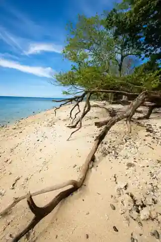
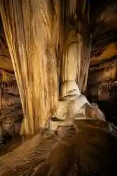
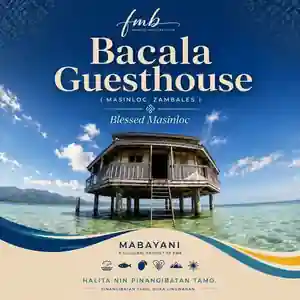
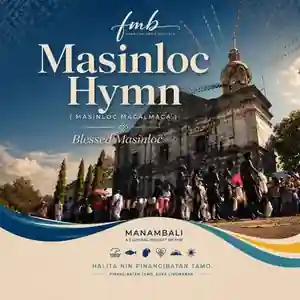

San Salvador IslandCoast & community

One town. One people. Infinite stories.
Discover the places, culture, and communities that make Masinloc home.
From clear waters and mountain rivers to caves, islands, and living heritage, Masinloc rewards the curious traveler.
Explore all places




This platform is an independent, non-governmental initiative by and for Masinloqueños—created to connect people, strengthen local visibility, and share Masinloc’s stories with care.
Learn more about usBringing Masinloqueños closer—at home and wherever they may be.
Creating room for local talent, businesses, initiatives, and ideas to be seen.
Sharing the beauty, culture, history, and character of Masinloc with the world.

Explore the people, symbols, and memory behind Masinloc’s cultural life.
Meet Masinloc through one of its island communities and surrounding waters.
A visual story of tide, shoreline, and local experience in Masinloc–Oyon Bay.

Architecture, faith, and community memory at the heart of town.
Slow down, understand the place, respect the communities, and leave with more than photographs.
Start exploringStart with the coast, add a river or mountain stop, make time for local food and heritage, and travel responsibly.